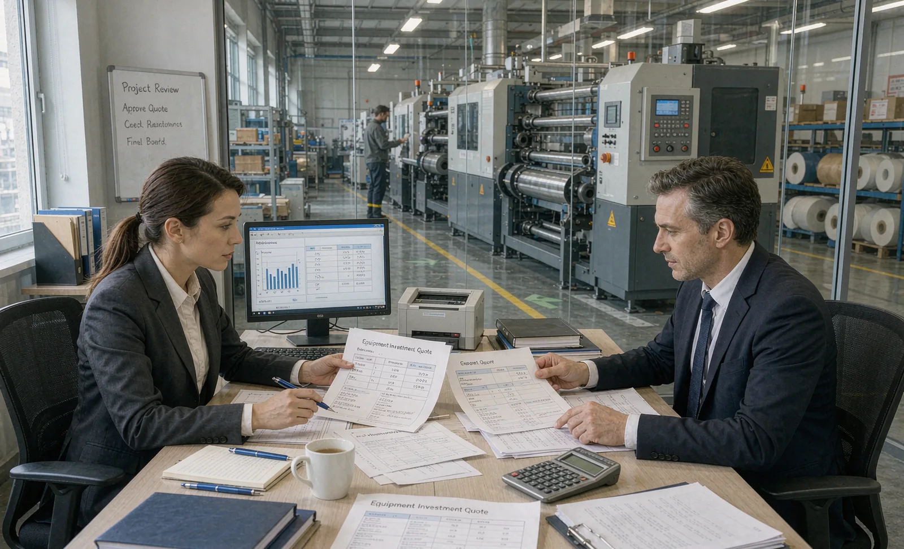

Published September 29, 2026 | By HDPTH Technical Editorial Team

Most slitter rewinder articles compare machines on width, speed and knife systems. Yet the question that stalls many purchase orders is not technical at all: how should we pay for it? The three routes—paying cash, spreading the cost through a loan or installment plan, and leasing—differ in total cost, cash-flow timing, balance-sheet treatment and who carries the residual-value risk. The right answer depends on your margin, your cash position and how certain the demand behind the machine is.
The three acquisition routes
Outright purchase
Paying cash means the machine enters your books as an asset you own from delivery, and there is no interest or leasing fee. It is the simplest structure and usually the cheapest in pure cost. The trade-off is liquidity: a converting machine, its installation and commissioning project, spare parts and ramp-up inventory all consume cash before the first meter of finished product is sold. Buyers who strip their working capital to avoid financing often end up borrowing short-term at worse rates.
Installment financing or a term loan
Financing spreads the price over months or years while you own the machine from the start. For imported machinery, the common structure is not a classic bank loan but staged contract payments: a deposit at order confirmation, a progress payment at shipment or after the factory acceptance test, and a balance after commissioning or the performance guarantee. The shipping terms determine when each stage falls due. Matched to milestones, this structure protects both sides and needs less external financing than a lump-sum purchase.
Leasing
In a finance (capital) lease, you effectively carry ownership risks and often take title at the end of the term. In an operating lease, the lessor owns the machine and you pay for use, then return it, extend, or buy it at an agreed or fair value. Leasing keeps the price off the cash budget line by line, can suit short or uncertain capacity needs, and may offer accounting or tax advantages depending on your jurisdiction. The costs are a financing margin, fees, and conditions—insurance, maintenance responsibility, relocation limits and early-termination terms—that deserve as much scrutiny as the rate itself.
Comparing the routes
| Criterion | Outright Purchase | Installment Financing | Leasing |
|---|---|---|---|
| Total cost over machine life | Lowest | Price + interest | Usually highest all-in |
| Cash-flow impact | Heavy upfront | Spread over project and term | Smallest, periodic |
| Ownership | Buyer from delivery | Buyer, secured by lender | Lessor or end-of-term transfer |
| Residual-value risk | Buyer | Buyer | Mostly lessor |
| Best fit | Strong cash, certain demand | Growth capacity, milestone-based imports | Short horizon, tight working capital |
Unsure which payment structure fits your project?
Send HDPTH your configuration and target production date. We will quote a staged payment plan aligned to FAT, shipment and commissioning.
Discuss Your ApplicationWhen each route wins
Outright purchase wins when cash is available and demand is certain, when the machine is a long-lived core asset, and when the buyer has already done the total cost of ownership work and simply wants the lowest lifetime cost. It also simplifies resale or relocation decisions later.
Installment financing wins when the economics of the machine are strong but liquidity matters: converting margin per meter typically exceeds financing rates by a wide margin, so keeping cash for raw materials and payroll while the machine pays for itself is rational. It is also the natural structure for cross-border orders, where staged payments tied to FAT and commissioning milestones give the buyer leverage if acceptance problems appear.
Leasing wins when the horizon is genuinely short—a contract or product line with an uncertain life—when accounting treatment matters, or when the buyer wants the lessor to carry residual value. Be honest about that horizon: leasing a machine you will run for ten years usually costs more than any financing fee saved on day one.
What to settle before signing
- Compare all-in cost, not headline rate: fees, insurance, end-of-term options and service bundles.
- Match every payment to a project milestone—order, FAT, shipment, commissioning, guarantee—not to calendar dates alone.
- Agree who insures, maintains and repairs the machine under each structure.
- For leases: check early-termination, relocation and buyout clauses in writing.
- For imports: confirm currency, bank-charge allocation and letter-of-credit terms with your bank before contract signature.
- Include spare parts and consumables in the funding plan; a machine without a warranty and spares arrangement is a cheaper invoice but a costlier year one.
- Test the plan against ramp-up reality: if commissioning slips a month, can the payment schedule absorb it?
Common financing mistakes
- Comparing routes only on rate: a low rate on a badly structured schedule can cost more than a higher rate tied to milestones.
- Ignoring ramp-up: machines rarely run at guarantee output in week one; the OEE data from comparable lines shows why payments should not assume instant full production.
- Stripping working capital: buying cash and then financing inventory at short-term rates is a hidden, expensive structure.
- Signing leases sight-unseen: termination and relocation clauses can dominate the economics of a five-year term.
- Forgetting the used-machine exit: if you might resell, ownership structures and documentation affect value—the used machine inspection guide shows what buyers check.
Buyer FAQ
Is it cheaper to lease or buy a slitter rewinder outright?
Over the full life of the machine, outright purchase is usually the lowest total cost because no lender margin or leasing fee is added. Leasing spreads cash outflow and preserves working capital, which can be worth more than the fee when cash is tight, but as pure cost it is normally higher than paying cash.
When does installment financing make sense for a converting machine?
Installment financing makes sense when the machine's added margin clearly exceeds the financing cost, when the buyer wants to keep cash for raw materials and staffing, or when the payment schedule can be matched to the machine's project milestones and ramp-up. It is also the common structure for cross-border machinery orders, where staged payments against shipment and commissioning protect both sides.
Who should own the machine in a lease structure?
Ownership depends on the lease type: in a capital or finance lease the buyer effectively carries the risks and rewards of ownership and often takes title at the end, while in an operating lease the lessor owns the machine and the buyer returns it or buys it at fair value. Which structure fits depends on your accounting treatment, tax position and how long you actually need the machine.
How do payment terms work on imported machinery orders?
Cross-border machinery orders commonly use a deposit at order confirmation, a progress payment tied to FAT or shipment, and a balance after commissioning or against the performance guarantee. Letters of credit or bank guarantees are often used to secure the stages. The exact split is negotiable and should be written into the contract alongside delivery and acceptance milestones.
What should be checked before signing a lease for production equipment?
Check the all-in cost including fees and end-of-term options, who insures and maintains the machine, what happens on early termination or relocation, the residual or buyout value, and whether the lease schedule aligns with the machine's delivery and commissioning dates. A lease that starts charging before the machine produces output costs more than its headline rate suggests.
Sources
- HDPTH: Total cost of ownership buyer guide
- HDPTH: Lead time and project schedule buyer guide
- HDPTH: Incoterms and shipping buyer guide
- HDPTH: Performance guarantee and contract guide
- ICC: Incoterms rules
Get a quotation structured around your milestones
Tell HDPTH your configuration, Incoterms preference and target production date. We will propose payment stages that align with FAT, shipment and commissioning.
Request a Quotation